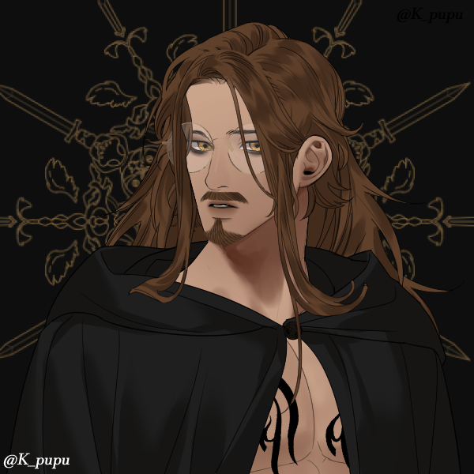

test
Kingdom of Endite
Ryze Endite
King of the End, Slayer of the last enderdragon dictator. Ryze Endite is a powerful King with an insatiable lust for knowledge granted by a pair of celestial orbs that fell during the Origin Event.
- Enderman made mostly Human.
- Cursed by The Cessation to be a tool to unravel the Cosmic Tapestry.
Character 2
This is the full content of the article. It can contain text, images, or any other HTML elements.
- Point 1
- Point 2
Cosmic Loom
The Archivist

The Archivist Ascended to Godhood by artificially extending their own life long enough to crack the code to interdimentional travel beyond that allowed by the capabilities of their origin world. While mastering this ability―and following the clues in myths across each world―The Archivist discovered The Loom and its Weaver. Seeing the perfect opportunity to satiate their thirst for knowledge and stories, The Archivist began to expand their already near infinite library into the broken and forgotten tapestries to create what is now known simply as The Archive.
The Archivist staffs this library with broken vessels from the various ripped tapestries. They are given purpose in The Archive by organizing and maintaining the infinite structure as well as procuring more stories from the various worlds. The Archivist themself also has been known to peer into the tapestries and catalogue stories themself, however upon making contact with the Cosmic Dream in its purest form, The Archivist has been rendered incapable of re-entering the worlds themself.
In order to continue satisfying their ceaseless thirst for stories, The Archivist developed a way to vie into each world by hijacking the senses of any entity they see fit. Seeing the world through the eyes of the chosen vessel and transfering their thoughts and experiences into The Archive. These chosen selections are The Archivist's favorite stories as they feel more personal.
- Once was the king of an entire era, now lost to time and the Archive.
- Can view the worlds through the eyes of anyone. This turns the vessel's eyes Golden.
- They represent the role of the Reader or Audience.
- They're face was lost upon contact with pure Cosmic Dream.
- Keeper of the Archive, Maintainer of The Cosmic Tapestries, Collector of Stories.
The Weaver

The Weaver represents the role of the Author/Artist. The first of the Gods to awaken from the Cosmic Dream of the Titan. The Weaver sits at the Cosmic Loom at all times, restlessly weaving worlds, and stories in tapestries made of Pure Dream.
- Point 1
- Point 2
The Cessation
The Cessation was born of the Weaver's lonliness, serving to cut the Cosmic Tapestry and seperate the worlds. Tired of being associated with destruction, they stepped out of their role and began inserting themself into various tapestries.
- Longs for a life of their own.
- Gone Insane.
- Cult of the Black Star demands his arrival.
The Avatar
The Avatar is fills the role of a character. Unlike the other Deia, The Avatar isnt a singular being, but rather is a chosen character from a world to pose as a viewpoint. The Avatar is selected by The Archivist, who determines the character with the best view on an event or series of events.
The Avatar is discernable by a shift in eye coloration to golden. Notably, this color shift is only present during the duration of "narration".
- Golden Eyes
- Point 2
Cult of the Black Star
Jo "Nebula" Aster
Chosen by the Sprezzatura and touched by its dark light. Raised by the black star to be the perfect sacrifice without their knowledge. Holds high command in both the Black Star and Astral Labs.
- Point 1
- Point 2
Sirius "Starwatcher" Sterling
Leader of The Black Star
- Face of Astral Labs
- Holds Rank of Star Watcher
- Startouched, Immortal.
Jon "Zero Point" Pierce
Ceo of Astral Labs
- Figure Head for the Black Star, Second to Sirius
- Has drank the Golden Blood
Cellestial Cafe
The Barista
A mysterious human with golden eyes and a kind smile. Interested in hearing about the wonders of the multiverse, the barista deals not in money but stories, recipes, and friendship.
- Immortal with golden blood
- Nameless
Character 2
This is the full content of the article. It can contain text, images, or any other HTML elements.
- Point 1
- Point 2
Starstruck Love
Nebula Aster
This is the full content of the article. It can contain text, images, or any other HTML elements.
- Point 1
- Point 2
Valentine
This is the full content of the article. It can contain text, images, or any other HTML elements.
- Point 1
- Point 2
FoE: Luck
Lucky Shot
This is the full content of the article. It can contain text, images, or any other HTML elements.
- Point 1
- Point 2
Emerald Shot
This is the full content of the article. It can contain text, images, or any other HTML elements.
- Point 1
- Point 2
A Fallen World
Jo
Awoken in a deserted world of ruins with no memories, Jo seeks to connect the dots left behind by those who came before and find out what happened.
- Peryton with golden eyes
- Point 2
Character 2
This is the full content of the article. It can contain text, images, or any other HTML elements.
- Point 1
- Point 2
Travellers Guide to War
Cedric
This is the full content of the article. It can contain text, images, or any other HTML elements.
- Wandering Trader
- Point 2
Character 2
This is the full content of the article. It can contain text, images, or any other HTML elements.
- Point 1
- Point 2
Placeholder
Character 1
This is the full content of the article. It can contain text, images, or any other HTML elements.
- Point 1
- Point 2
Character 2
This is the full content of the article. It can contain text, images, or any other HTML elements.
- Point 1
- Point 2
Placeholder
Character 1
This is the full content of the article. It can contain text, images, or any other HTML elements.
- Point 1
- Point 2
Character 2
This is the full content of the article. It can contain text, images, or any other HTML elements.
- Point 1
- Point 2